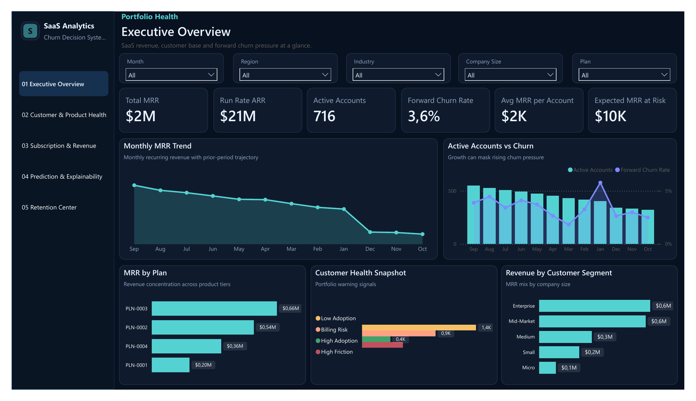
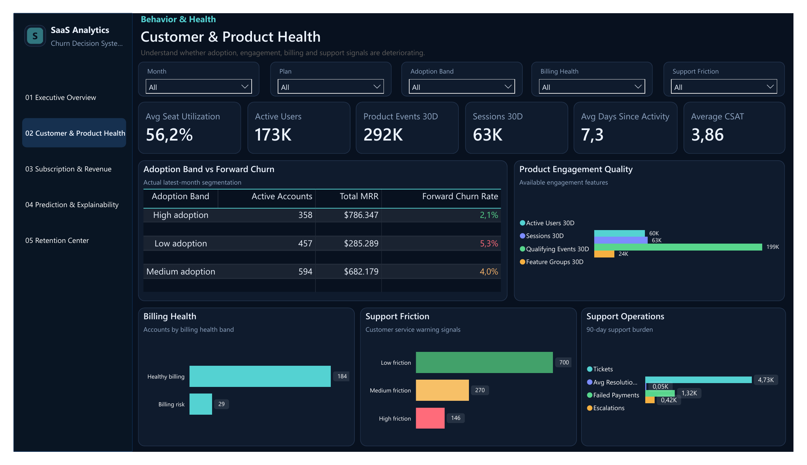
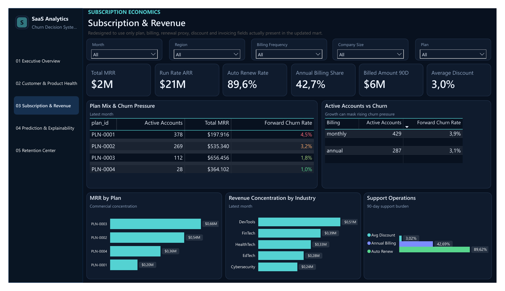
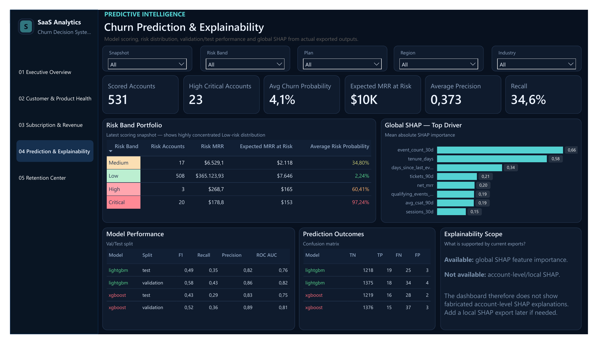
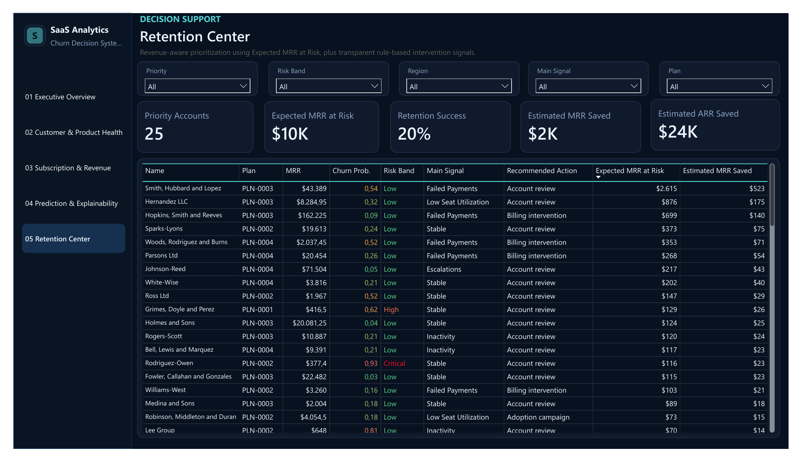

Point-in-time modeling
Build monthly active-account snapshots using only information available at snapshot time.
Portfolio Case Study / 01
An end-to-end B2B SaaS analytics system connecting product behavior, recurring revenue, customer health and predictive churn risk to a retention workflow.

Which active accounts are likely to churn in the next 30 days - and where should limited Customer Success capacity be deployed?
A probability-only churn list is insufficient because account value and operational signals differ materially. Leadership needs one view of recurring-revenue health, deteriorating accounts and intervention priority.
A separate synthetic-data engineering project generates fictional FlowDesk accounts, users, subscriptions, invoices, payment attempts, product events, support tickets and churn events. The analytical layer consumes nine relational Parquet tables and preserves source-system grain.
Build monthly active-account snapshots using only information available at snapshot time.
Engineer product, subscription, billing and support features in SQL/DuckDB and validate chronologically.
Export scored accounts, explainability and value-weighted priorities to Power BI marts.
The five-page report moves from enterprise health to customer signals, subscription quality, model performance and a final value-weighted retention queue. Select any frame to inspect the full dashboard.
Click to enlarge
01 / Executive Overview ↗
02 / Customer & Product Health ↗
03 / Subscription & Revenue ↗
04 / Churn & Explainability ↗
05 / Retention Center ↗LightGBM was selected using validation Average Precision, with the threshold frozen before evaluation on a future holdout period. Point-in-time features prevent post-snapshot leakage, while Tree SHAP explains global model behavior.
A moderate-risk enterprise account can represent more revenue exposure than a very-high-risk small account.
Recent product events, activity recency, sessions and seat utilization are prominent global model signals.
Product adoption, billing quality, support friction and contract characteristics should be reviewed together.
High precision reduces false alarms, while lower recall means some churners remain undetected.